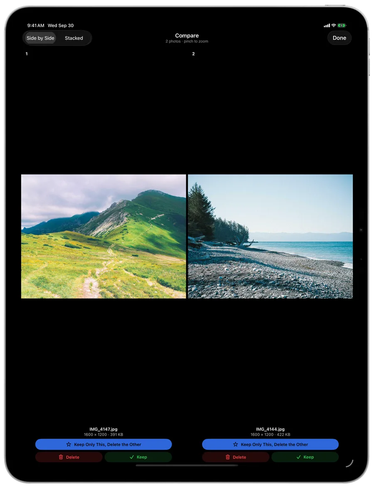
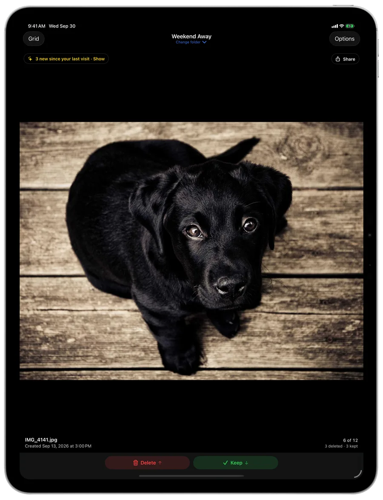
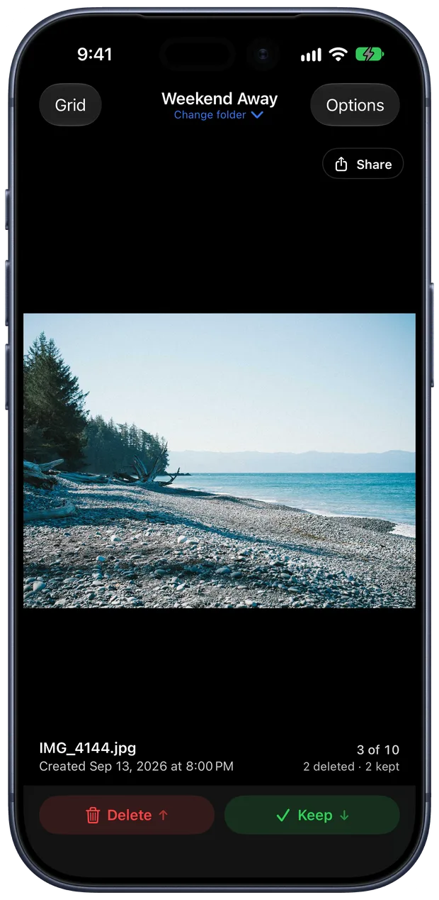
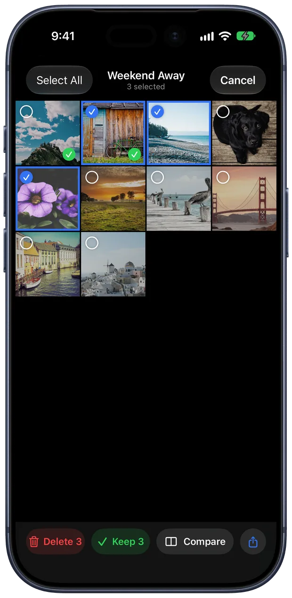
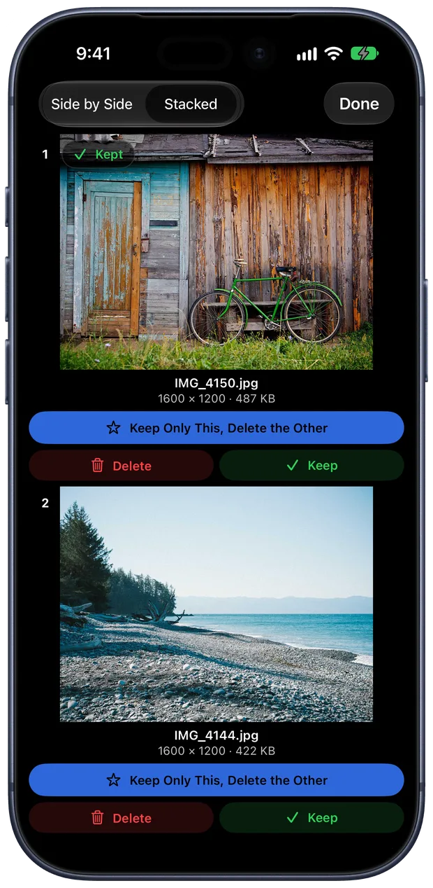
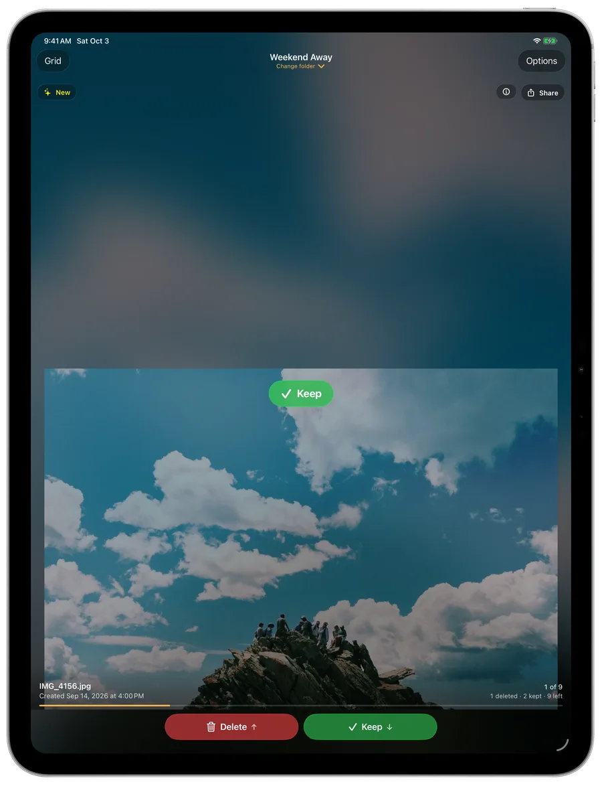
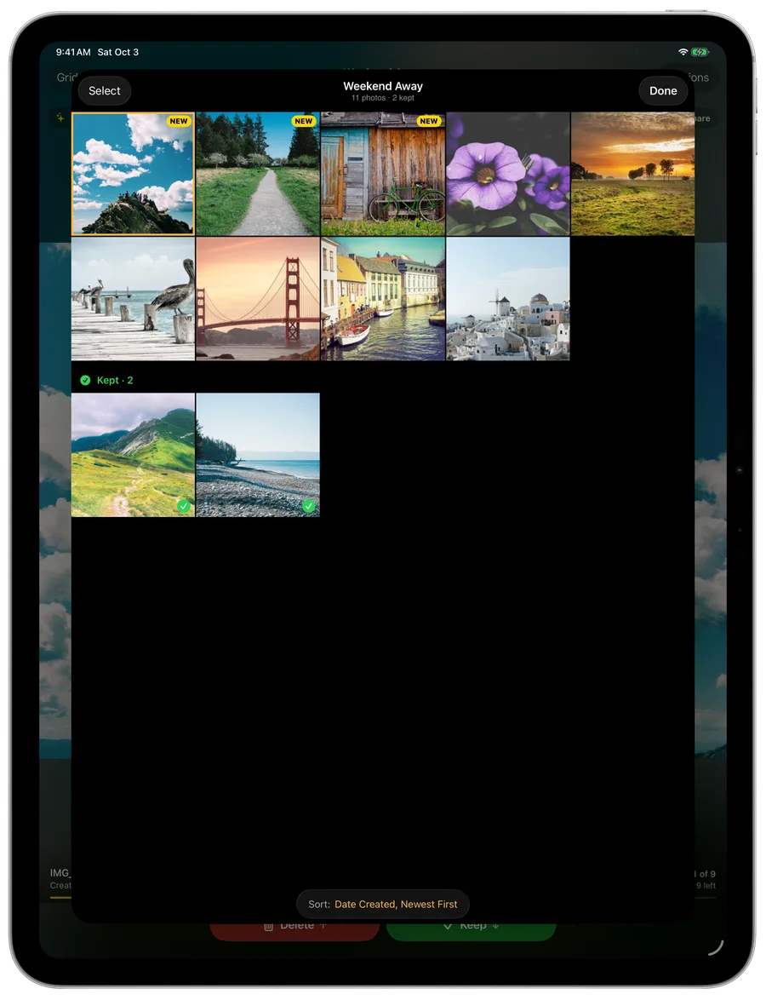

For iPhone and iPad
Swipe through any folder of photos.
One at a time: keep the good ones, clear out the rest. Until now, only the Photos app let you do that. Dropbox, iCloud Drive, a camera card, your downloads: open one in Files and you get one photo, then a back button. Swipe up to delete. Swipe down to keep.
- Dropbox
- iCloud Drive
- Google Drive
- On My iPhone
- SD cards
- USB drives
Coming to the App Store for iPhone and iPad.
Your Photos app lets you swipe. Your folders never did.
The Files app will show you a photo. It won't help you decide about the next three hundred. That's the whole job here.
| Files app | Thumb Through | |
|---|---|---|
| Opens any folder in Files | Yes | Yes |
| Keep or delete with one swipe | No | Yes |
| Shows what you've already kept | No | Yes, with a ✓ |
| Picks up where you stopped, in every folder | No | Yes |
| Near-duplicates side by side: keep the best, bin the rest | No | Yes, in one tap |
| Tells you which photos are new since you last looked | No | Yes |
| Undo, plus a history of each folder with Put Back | Recently Deleted only | Yes |
The whole app is one gesture.
A short tour on first launch has you practise it on a sample photo.
Pick a folder
Choose it once from Files. Recent folders are one tap away after that.
Swipe
Up and away deletes. Down and in keeps. Sideways just moves to the next photo.
Change your mind
Every delete has an Undo, goes to Recently Deleted in Files, and shows in the folder's History with a Put Back button.
Compare
Two takes of the same moment? Keep the better one.
Select two to four photos in the grid and tap Compare. They sit side by side on iPad, stacked on iPhone, each with its size in pixels. Pinch to check focus, then Keep Only This: the one you picked stays, the others go, and one Undo brings them all back.
- Select as many as you like in the grid, then Delete, Keep or Share them together
- On an iPad keyboard: 1 to 4 keeps that photo, C compares, ⌘A selects everything

Where it earns its keep
Dropbox Camera Uploads
Years of every photo your phone ever took, in one folder. Go through a month at a time; it remembers where you stopped.
A card straight from the camera
Plug it into your iPad and cull the shoot before anything gets imported. Compare the near-misses, keep the sharp one.
Someone else's photos
The wedding album a friend shared on Google Drive, the event photographer's download. Keep yours, clear the rest.
Screenshots and downloads
The folder you never open because it's four hundred files deep. One swipe each and it's done.

Folders that keep filling up
Come back next month. It knows what's new.
Camera Uploads, a shared album, a folder a script fills every night: you're never really done with them. Open one again and Thumb Through says how many photos arrived since you last looked, and Show takes you straight to them. New ones wear a NEW tag in the grid until you've seen them.
- It recognises each photo by its size and dates, not its name, so a folder that renames or renumbers its own files keeps your place and your ✓ marks
- A running count under every photo, "12 deleted · 30 kept", so you always know it's working
- Changes made on your Mac show up while the app is open





Sort it your way
By date created, date modified, name, size or kind, newest or oldest first.
Keep means keep
A kept photo stays right where it is with a ✓ on it. Or have kept photos move to a Keepers folder.
Full screen and zoom
Tap a photo to see it edge to edge, tap again to go back. Pinch or double-tap to check focus before you decide.
More photo, fewer buttons
Once the swipes are second nature, hide the Delete and Keep buttons in Options and give the photo the room.
History for every folder
See what you deleted and kept, how much space you freed, and put anything back.
Nothing comes to us
No account, no uploads, no tracking. Your place and ✓ marks follow you between iPhone and iPad through your own iCloud.